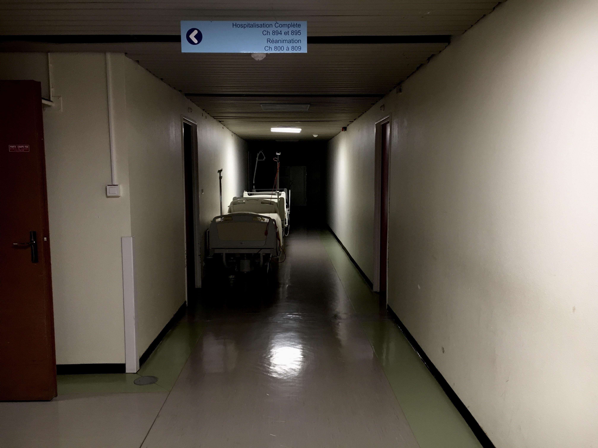
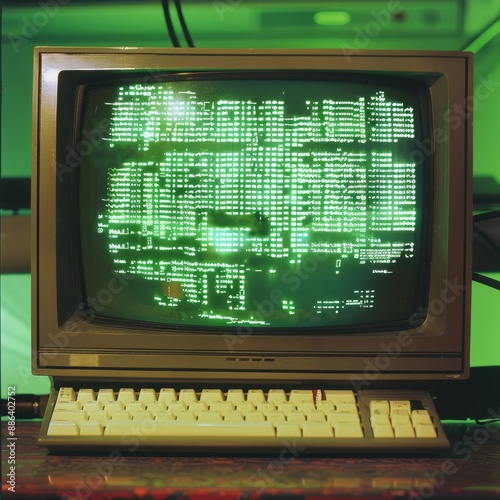

La historia
Bienvenido al soporte técnico de la morgue municipal.
Desde el 13 de octubre el sistema funciona correctamente de forma extraña como él quiere.
Los empleados dicen que la contraseña se escribe sola y que el botón de entrar huye del ratón. El departamento TI no encuentra el fallo. El técnico que lo buscó tampoco aparece. Su usuario sigue conectado. Sigue aquí. Debajo del suelo técnico. Le oímos teclear.
Hoy es 31 de octubre. Es la única noche del año en que el sistema deja entrar a los de fuera. Y también la única en que deja salir a los de dentro.
Cada noche, a las 3:00 h, la impresora saca la misma hoja: una lista de nombres. Esta mañana había uno más que ayer. Era el del vigilante de noche. Mañana habrá otro. Ya ha empezado a escribirlo.
Aviso importante: la sala de servidores está a 4 oC y huele a CH2O. No entréis solos. Y si entráis acompañados, contad cuántos salís.
Este mensaje se ha generado automáticamente... ¿o no? Lleva tu nombre en la última línea del código.
sé que estás leyendo esto. yo también te leo a ti.
Grabación de la cámara frigorífica
Micrófono de seguridad, cámara 2, 03:00 h. La sala estaba vacía. Ponte los cascos.
Algunos empleados juran que, al final, se oye un segundo corazón. Es el tuyo. Se está acompasando con el de él.
Cómo recuperar tu acceso
- Escribe tu nombre de usuario.
- Si el botón «Entrar» se escapa:
- no lo persigas,
- comprueba que tu usuario sigue vivo,
- vuelve a intentarlo.
- Si la pantalla te llama por tu nombre, apágala.
- Si sigue encendida después de apagarla, no respondas.
- Si contestas, ya no podrás
salircerrar sesiónmorir del todo.
No tenías que pulsarlo. Ahora tienes que bajar a la cámara 13.
¿Dónde está el paso 4? Lo arrancaron. El que lo escribió está en la cámara 13.


Incidencias abiertas
- #0313 · La cámara 13 se abre sola. Estado:
resueltoabierto. Siempre abierto. - #0314 · El monitor de la sala de autopsias muestra la cara del usuario antes de que se siente. Estado: sin asignar.
- #0315 · Alguien ha cambiado todas las contraseñas por la misma palabra: «ayuda». Estado: el técnico no ha vuelto.
- #0316 · Hay huellas de manos por dentro de la pantalla. Estado: no limpiar.
- #0317 · Nueva incidencia abierta por: tú. Hace 0 minutos.
déjame salir déjame salir déjame salir déjame salir déjame salir déjame salir déjame salir déjame salir déjame salir déjame salir déjame salir déjame salir déjame entrar
NO ABRIR · Cajón 13
TE ESTÁ MIRANDO
Ahora él también sabe tu nombre de usuario.
Registro de usuarios
Lo encontramos en el cajón 13 de la cámara frigorífica, debajo de una sábana. Estaba tibio. Leedlo con cuidado...
La historia
Bienvenido al soporte técnico de la morgue municipal.
Desde el 13 de octubre el sistema funciona correctamente de forma extraña como él quiere.
Los empleados dicen que la contraseña se escribe sola y que el botón de entrar huye del ratón. El departamento TI no encuentra el fallo. El visitante que lo leyó tampoco aparece. Su usuario sigue conectado.
Hoy es 31 de octubre. Es la única noche del año en que el sistema deja entrar a los de fuera. Y tú ya has entrado.
Cada noche, a las 3:00 h, la impresora saca la misma hoja: una lista de nombres. Esta mañana había uno más que ayer. Era el tuyo.
Aviso importante: el pasillo no termina. Ya has pasado por aquí. Vuelve arriba. Vuelve arriba. Vuelve arriba.
Volver al principio (no cambiará nada)